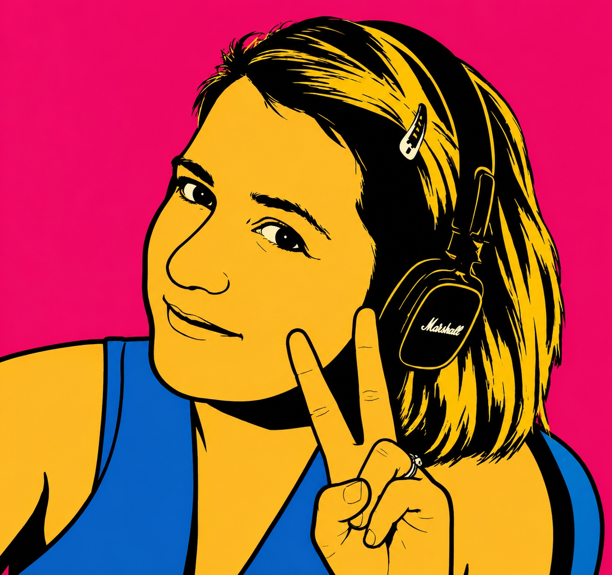
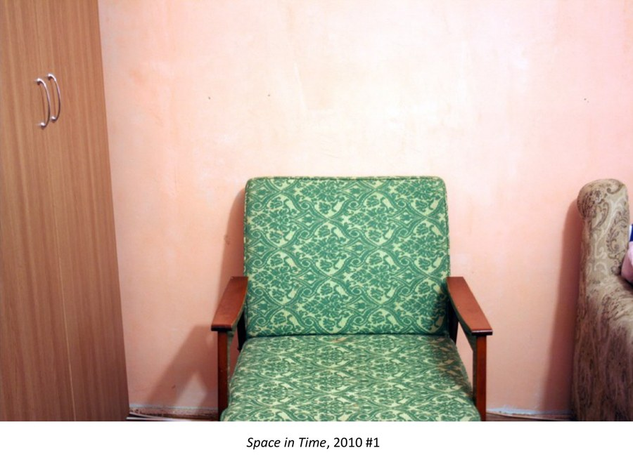
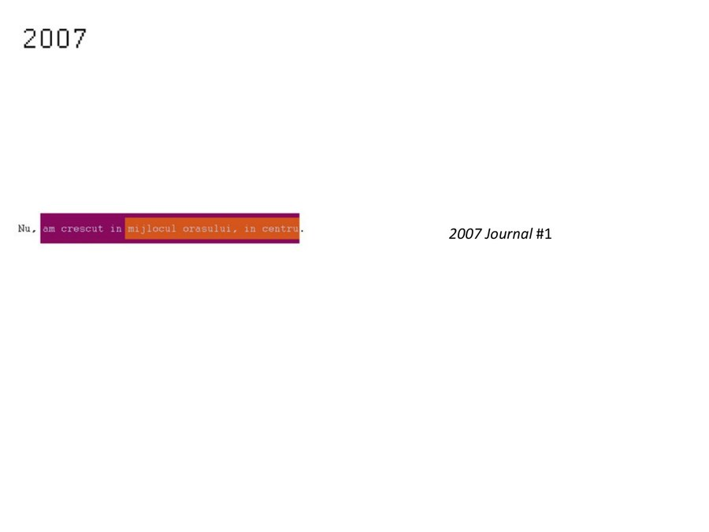
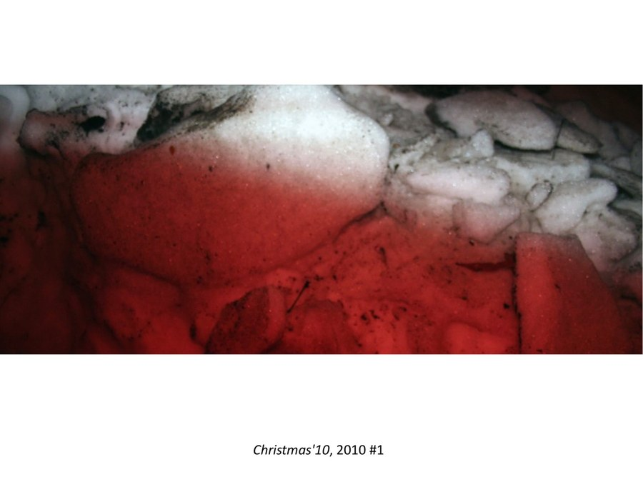
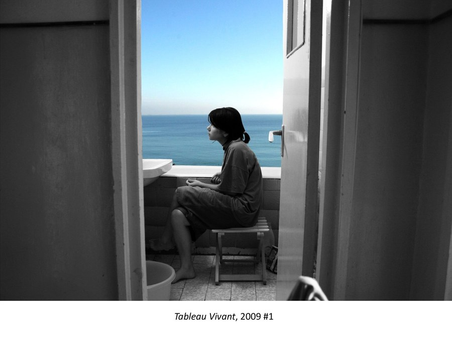
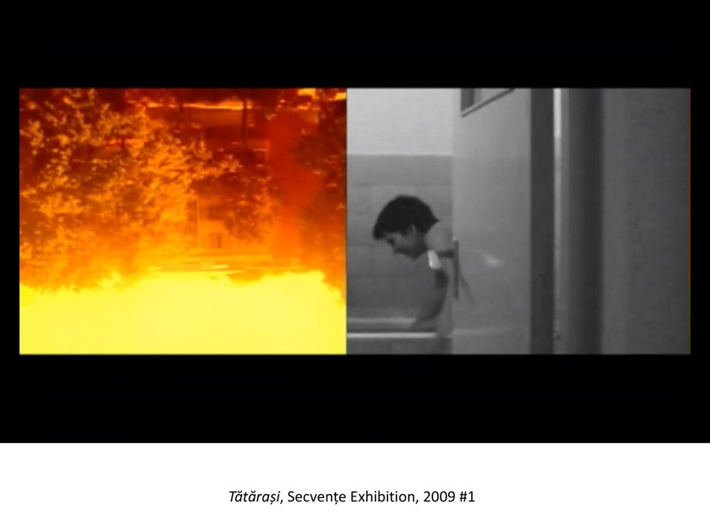
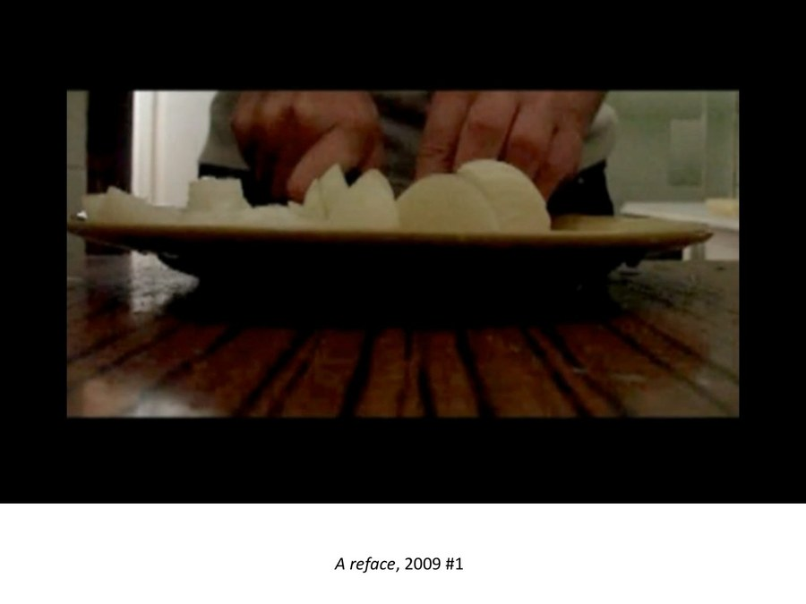
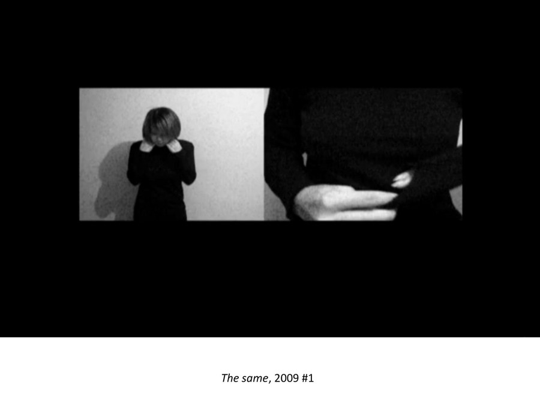
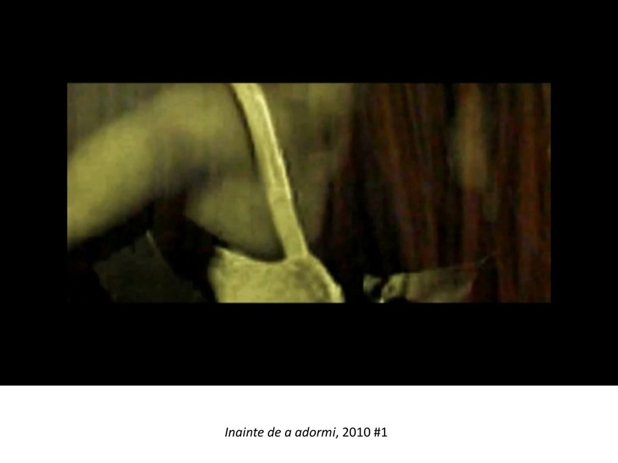

About
Mostly serious work. Not always serious tone.
Hello — I’m Ema. I work on machines that try to read difficult documents: noisy newspapers, OCR and HTR transcripts, handwritten archives, inscriptions, administrative records, financial texts, multilingual media, and visual cultural collections.
I care about what AI extracts from them — people, places, events, relations, narratives, uncertainty — but also about what it misses, invents, flattens, or quietly ruins while looking very confident. I come from both computer science and art, so I tend to treat documents as data, evidence, image, memory, and occasional trouble.
Outside research, I keep returning to photography, handmade things, gardening with variable success, films, series, mostly non-fantasy books, metal festivals, camping, and soup logic. I like clarity, good noise, dry humor, and people who get to the point without murdering the point.
Selected work
Things I keep returning to
A compressed map of recurring research themes. Each box opens a project page with the work behind it and selected papers.
Noisy Documents
I study OCR, HTR, digitization errors, degraded text, and how noise changes downstream meaning.
Research + papers → 02Semantic Extraction
I work on named entities, entity linking, relations, events, and the small structures that make documents searchable.
Research + papers → 03Historical AI
I care about temporal modelling, multilingual archives, and language that refuses to stay stable.
Research + papers → 04Cultural Heritage
I work with digital epigraphy, Armenian and Ukrainian heritage, cultural weaponization, and structured memory.
Research + papers → 05Multimodal Archives
I connect text, image, layout, typography, photographs, and visual traces in document collections.
Research + papers → 06Applied Document Intelligence
I have also worked on document fraud, fake news detection, epidemic monitoring, and large-scale research infrastructures.
Research + papers →Photographs / video
Photo projects
Extracted from my art projects since 2009: project titles, dates, media, descriptions, captions, and plates. Click a cover to open the full project.

01Space in Time
Private space, performance, rooms, projection, exhibition.
2010 · performance · video · photography · programming · interactivity
022007 Journal
A book of images, text fragments, truthfulness and staring.
2007 · photography · book
03Christmas '10
Small events, familiar surroundings, memory loops.
2010 · photography
04Tableau Vivant
Photography and exhibition views, 2009.
2009 · photography
05Tătărași
Photography and exhibition views, 2009.
2009 · photography
06A reface
Video stills from the 2009 portfolio.
2009 · video
07The same
Video project, 2009.
2009 · video
08Înainte de a adormi
Video project, 2010; “cu 30 de ani înainte.”
2010 · videoWriting
Posts, notes, opinions
A place for short texts about AI, archives, cultural heritage, evidence, noise, and other things that refuse to stay neatly technical.
LLMs in archives: fluent, useful, suspicious
On why good prose is not the same thing as grounded historical understanding.
NoteDocuments are evidence, not just data
A small manifesto for building AI systems that keep traces attached to claims.
Contact